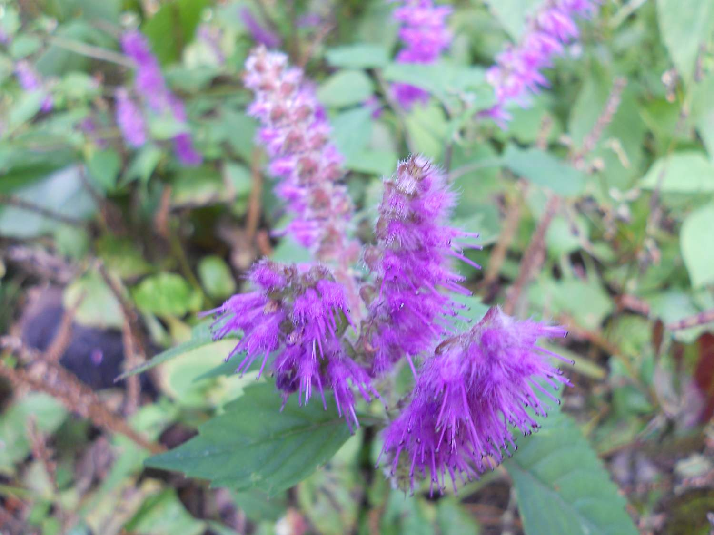

发信人: supervicky (我叫走走|爱在云之遥||珍爱生命，远离水瓶), 信区: outdoor
标 题: ~~千呼万唤始出来的大明山~~【多图小心】
发信站: 饮水思源 (2010年10月23日16:40:32 星期六)
既然大家都不传，那就我来吧，如果这也算是对野协的一点小贡献的话~ 反正最近小空闲
了点 哈哈~
看了照片又回忆了一遍，很开心却冻死人的回忆，（实在太冷了==）
认识了很多有趣的人，见到了美景，享受了久违的篝火，还有星空~
大家一路走来都很high，一路唱歌，听到不少神曲，还有好多“好感人”。。。
路途艰辛，体验了各式的路 非常爽~
回程路上听神仙等人灌输了好多野协精神，感同身受
希望我以后，离开学校了还能拥有像野协这样的户外伙伴吧~~
嗯 这是一种精神 我喜欢~
爱生活 爱户外~~
废话不说 上图啦
先是全家福
screen.width - 200){this.width = screen.width - 200}">
然后看看某处的全景

第一天早上遇到的一条瀑布 水花四溅 好开心啊~~
screen.width - 200){this.width = screen.width - 200}">
大家在路上
screen.width - 200){this.width = screen.width - 200}">

密林1
screen.width - 200){this.width = screen.width - 200}">
密林2 更多密林大家都没照。。。因为路不好走==

怪路3

幸福的花儿~~
 screen.width - 200){this.width = screen.width - 200}">
山顶的云淡风轻

screen.width - 200){this.width = screen.width - 200}">

我向往的！
screen.width - 200){this.width = screen.width - 200}">
screen.width - 200){this.width = screen.width - 200}">
诡异的傍晚
screen.width - 200){this.width = screen.width - 200}">
篝火！！！！！！太赞太给力了！！！！！！！！
这次雨神终于不给力了 哇嘎嘎
screen.width - 200){this.width = screen.width - 200}">
我们的千亩田营地 第二天清晨 冻死人的一个晚上！！！我几乎昏迷了==
screen.width - 200){this.width = screen.width - 200}">
screen.width - 200){this.width = screen.width - 200}">
note：粉色帐篷是YZH的新欢……
screen.width - 200){this.width = screen.width - 200}">
第二天全在密林中走，也险的。密林走丢了一次，好在后来赶上。
遇到很多溪流，很欢快，可惜照片不多。。。。大家都忙着补给享受了哈

总而言之，很有收获，心情开朗很多，也豁达了~
眼泪啊纠结啊什么的，根本不是我射手座的事情，哈哈哈哈~~
天天患有失忆症，这样才能天天开心嘛~~
希望大家喜欢~~~~
--
不多言 只要你记住
我能遇见你 已经很不可思议
这样已经很好
※ 来源:·饮水思源 bbs.sjtu.edu.cn·[FROM: 58.196.130.93]
※ 修改内容:·supervicky 于 10月23日16:42:35 修改本文·[FROM: 58.196.130.93]
※ 修改内容:·supervicky 于 10月23日20:55:55 修改本文·[FROM: 58.196.130.93]
※ 修改内容:·supervicky 于 10月23日20:56:51 修改本文·[FROM: 58.196.130.93]
|